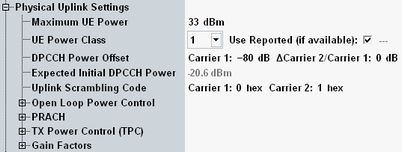

This section describes the highest level of the physical uplink settings section.

Maximum allowed output power of the UE transmitter (averaged over the transmit slot).
WCDMA user equipment is divided into four power classes. The maximum output power of the UE transmitter depending on the power class is defined in 3GPP TS 25.101, section 6.2. An even lower "Maximum UE Power" value restricts the output power range of the UE also.
Remote command:In signaling mode, the UE power class can be set either manually or the UE power class reported by the UE in the capability report can be used. In reduced signaling mode, the UE power class must be set manually.
If no reported value is available, the manually configured value is used.
The power class influences the expected nominal power in automatic mode.
Remote command:Reference value for the initial DPCCH power of the UE at random access: The larger the DPCCH power offset, the larger the initial DPCCH power.
In a scenario with dual uplink carrier, individual values can be set per carrier.
The DPCCH power offset for secondary uplink is the offset between the initial DPCCH power level on the secondary uplink and the current DPCCH power level on the primary uplink.
Remote command:Displays the expected power of the first DPCCH received from the UE. The value is calculated as follows (see also 3GPP TS 25.331):
Expected power = Minimum(<Maximum UE Power>, <DPCCH Power Offset> – <Output Power (Ior)> – <Level of P-CPICH>)
Number of the long code that the UE has to use to scramble the uplink WCDMA signal. The scrambling code number must be in the range 0 to FFFFFF (hex) corresponding to 0 to 16777215 decimal.
Remote command: